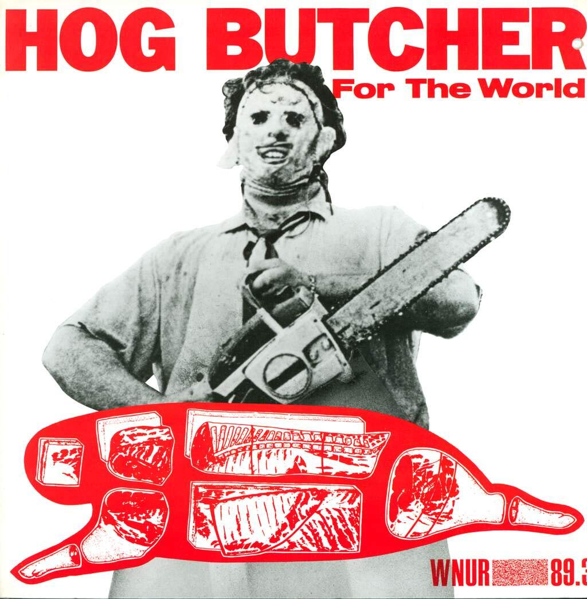
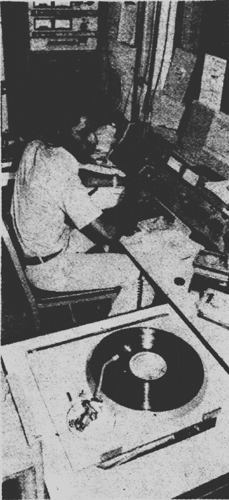
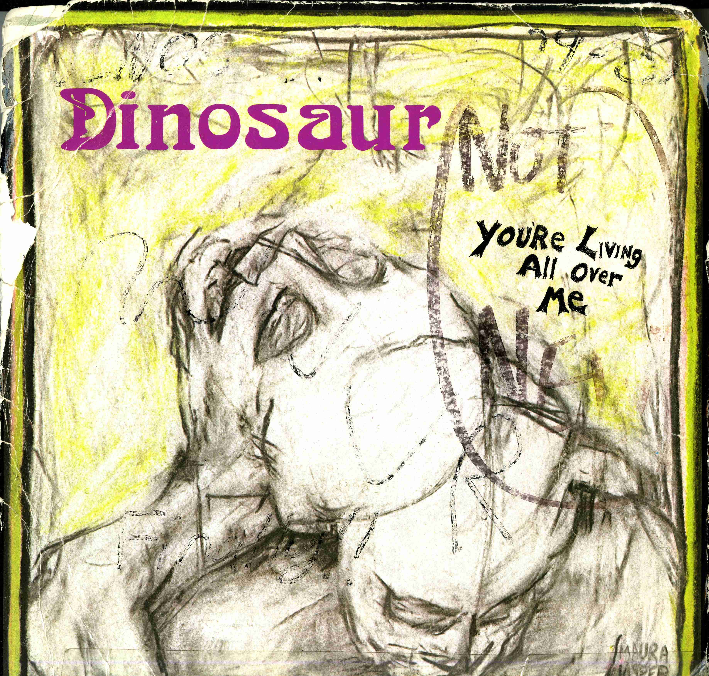
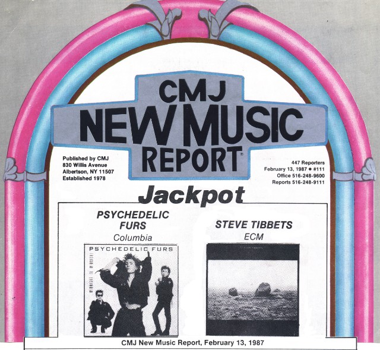
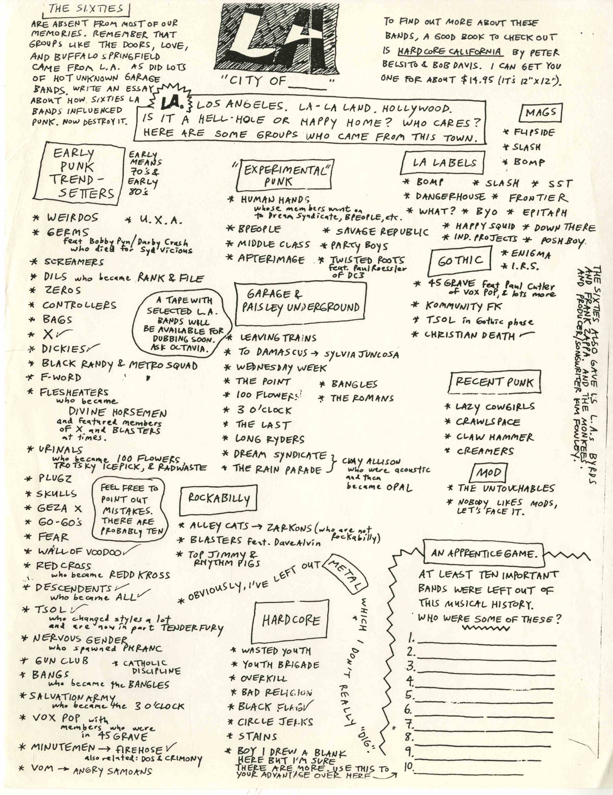
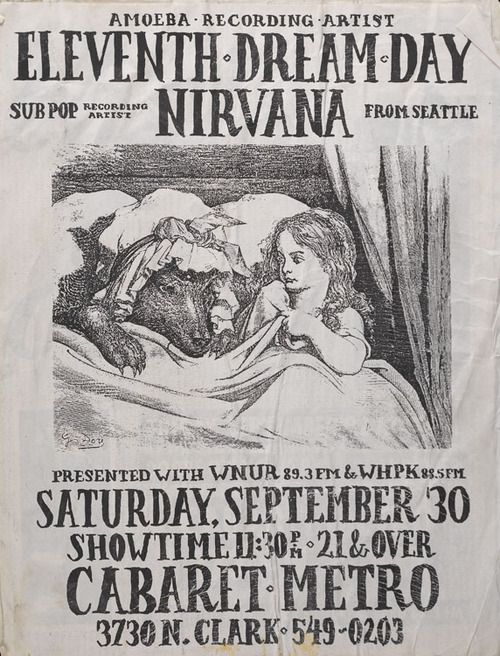
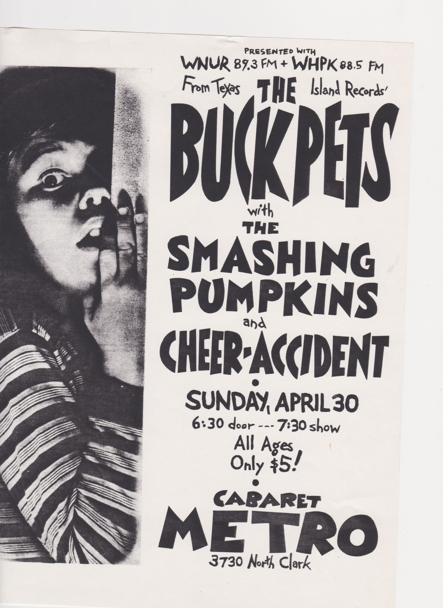

In 1987, the WNUR programming schedule saw its largest change in its history, Rock Show traded with the long-running afternoon Jazz Show programming. As noted earlier, up until this point, Rock Show was on the air from 6am-2:30pm every weekday. In the early 80s, this time slot imposed a stylistic restriction on the early morning Rock Show: “The 6-9 show was considered the softer show, you weren't allowed to play the really punkish stuff because it was the wake-up time.” (Scott Byron) By 1987, as the Rock Show had progressed into more experimental and “loud” territories and, at the same time, had built a large following in Chicago, Rock Show simply outgrew its morning time slot. Octavia Kincaid a Rock Show DJ, Airplay Producer and 1989 General Manager describes this move when she spoke with me as the result of a “contentious war within the station”. This programming change was in my mind the final change at WNUR that would situate Rock Show as the core of the station’s programming and culture.
Understanding the musical atmosphere of Rock Show in the year of this change, we can turn to Hog Butcher For The World, the third and final compilation released by the station in the 1980s. This third and final vinyl compilation released by WNUR is in many ways a synthesis of the first two, it features another track from Big Black alongside other post-hardcore acts like Urge Overkill and God’s Acre showcasing what would become the Chicago noise rock scene. In addition to these sounds, the compilation features freak-folk from Mojo Wishbean and Trippy Squashblossum (later known as Freakwater) and post-punk from Bloodsport, The Garden and The Defoliants. Hog Butcher For The World represents an even further divergence in sounds and sensibilities from the early 80s toward more experimental and noisy tendencies within the Chicago rock scene, though all well under the rock umbrella.

Airplay
While not explicitly part of the Rock Show story, Airplay, the program started in 1979 by Steve Jarvis as local-focused music programming, evolved in the mid-eighties to a more prominent role in the station’s programming and connection to the Chicago music scene. While Jarvis simply played local records, under the direction of Octavia Kincaid and Mary Kate Murray, the show began to feature live performances by and interviews with Chicago bands. “Marky Kate was the first person to bring bands in for interviews and because I couldn't fill up two hours with good music, I was like: ‘ooh, come play on-air!’ and that filled up an extra 30 minutes easily. I also thought if I could get people to come and do an interview and play, that'd be more interesting. It's just more fun. Like more people would listen.” (Octavia Kincaid) For those reading this who never spent time in the WNUR as it existed over the span of this time in Annie May Swift, this is a good time to mention the layout of the station in the basement of what is now the RTVF admin building. There were two main rooms, Studio A where the radio control board, two microphones, turntables and later CD players were and Studio B, connected to Studio A by a large window where the collection of records lined the walls, people previewed their records and newscasters broadcasted from. Additionally there was a small recording studio built only for voice record to record station identifications and PSAs and that was about it.
As Octavia goes on to explain, these first Airplay recordings happened in Studio B: “We did the recordings in Studio B and there was no soundproofing, just the window and a thin wall separating the two studios. So if you had too much bass, like all you could hear was like a rattling of the window. So it was very much a spit and duct tape kind of approach. But I thought that made it better, you know? I mean, at the beginning nobody brought amps or anything. People would just play acoustic or whatever, and then it got more ambitious. People were like, ‘oh, I thought we were going to play live. We brought our amps.’ I'm like, ‘well, knock yourself out you can, you can plug it in and you can play, I don't care,’ Yeah. I just wanted to have good music. That was always the most important thing?” And by the way, first band to play on Airplay in 1986/87, God’s Acre, last band to play before Octavia left the station 1990: The Jesus Lizard.

As mentioned, Airplay was not officially affiliated with Rock Show, airing on Saturday afternoons, however it has been an outshoot of Rock Show (the artists featured were by-and-large rock acts in the late 1980s) throughout its history much like Fast n’ Loud and Independence Day mentioned earlier. Airplay again extended WNUR’s reach into the Chicago music scene and offered artists operating in the underground a place to be heard and promote work in the local scene. In this way, WNUR can begin to be understood as a unique kind of community space operating in a sort of dispersed, yet hyperlocal fashion. Dispersed, because, other than DJs gathering in the basement of Annie May Swift, WNUR is not what one generally considers as a community gathering space. The station achieves its local focus then, through a spread out gathering of Chicago musicians on-air and a community of listeners off.
The movement toward underground, less commercially viable music as a general trend at WNUR also plays into the support of and movement toward the local music scene.

In comparison to the station’s focus and taste in the early-eighties which veered toward larger, national and international acts, the changes in focus at the close of the decade solidify ties between local bands and the station. These ties come in the form of airtime, promotion, and compilation releases all building legitimacy for the local Chicago scene and defining what that scene was. In all these acts of acknowledgement WNUR not only signifies a “Chicago Rock Scene” to its terrestrial listening audience, but also to a nationwide audience through zine circulation, word of mouth and official publications like the previously mentioned College Music Journal (CMJ). CMJ was a monthly magazine that, among other things, printed top ten lists from college radio stations throughout the country and held yearly conferences in New York City. These publications and events connected a previously unconnected nationwide network of college radio stations and college radio listeners. In this way, the local Chicago scene became represented on a national platform through WNUR and its monthly lists, most often focusing on local music. As a side note Scott Byron went from WNUR to work at CMJ and witnessed from afar as WNUR began to focus more exclusively on underground music and eventually “became less involved in the CMJ world.” (Scott Byron)

CMJ also represents the increase in popularity and cultural awareness of college radio in general. While those in the early-eighties expressed interest in doing college radio in general prior to attending Northwestern, for students starting at WNUR in the mid-eighties there was a definite awareness of WNUR and its reputation. With this also came an increased competitiveness to get a show: “I wasn't looking at schools that didn't have a robust college station. So, I knew I wanted to participate from the beginning, but was very hard to get your foot in the door. You had to apply, there were interviews to get a show. It was very hard to get a show your freshman year. Me and this guy I met in my dorm, we paired up to apply for a freeform show and started that way.” (Octavia Kincaid)
“In high school in Philly I got really into REM and REM got me into all that sort of indie college radio stuff, new wave. I also did a summer program thing at Wellesley college where one of my counselors was a DJ at WPRB in Princeton. And you can pick up WPRB about half the time depending on your antenna, the time of day from Philly. So that was the station I got to know really well. And you know, it's probably where I discovered more obscure kind of indie stuff and alternative when that word actually meant something. So, by the time I applied to Northwestern, I knew WNUR really well. And it was part of why I wanted to go to Northwestern for sure. And I mean, I was looking at other schools in Boston that all have perfectly fine radio stations. I remember my high school guidance counselor telling me that I shouldn't like pick my school based on the city or something like a radio station because ‘Oh, you'll get to campus and you know, you'll just be part of campus life and you won't care about any of that stuff ‘ And I was like ‘Yeah, I don't think so.’ And I was right.” (Jason Cohen) And speaking about WNUR’s nationwide reputation to a high schooler: “I knew it was big, I knew it was big station. I don’t remember exactly how I knew, but I knew it was a big transmitter in a big city.” (Cohen) More proof of this awareness comes from a 1988 Chicago Tribune article 1988 titled “Radio’s Cutting Edge” by Steve Nidetz, who writes “’It’s the most powerful college radio station in Chicago,’ says Brian Long, an official with SST, the kind of small record label that is the staple of alternative music. ‘WNUR is one of the top five stations (in the country) we work with.’” – a big nod coming from the Long Beach-based voice of the early-eighties underground.

WNUR as a Student Organization
Amid the growing influence of WNUR in underground, localized music community of Chicago and nationwide through the burgeoning underground music industry, the station also of course had a relationship to Northwestern University and with the immediate community of students involved. From the early-eighties, WNUR has maintained a unique relationship to the University in comparison with other student groups. Financially, Northwestern has housed and paid for the station’s electricity, powered its transmitter and continually renewed its FCC license under the University’s non-profit status. While most other student groups at Northwestern also receive funding from the University to put on events or buy equipment, WNUR is unique in that it raises this operating budget annually through a traditional radio pledge drive. This model of donor support places the station somewhere in limbo between the school and the community with one foot in and one foot out. It is perhaps because of this that throughout history, Northwestern has never taken a strong interest in the station. My own work with the archive and this history collecting is a testament to this fact as it has happened for the most part independent of the University and without much interest or funding from them, the support of the Office for Undergraduate Research and their summer research grant being the one exception. While WNUR played more and more radical music over the years and began broadcasting radical, underrepresented thoughts on programs like This Is Hell! in the nineties, the conservative Northwestern, never really took any notice to or attempted to regulate the station.

For students in the late-eighties the station was again a place of community and refuge in what was a growing divide between mainstream Northwestern culture of greek life and academic rigor and the more alternatively-minded community of WNUR:
Jason Cohen (1985-1989, DJ, Rock Music Director): “It was like being in a frat or on the football team, I'm certain of it. I mean all my close friends then and the ones that I'm still in touch with now were NUR people even like people that weren't part of the rock show, who were freeform DJs or were involved in some way and remain friends. Everyone I lived with in college was a WNUR person. Dan Osborn and Mark Ward lived on library place in a little apartment there and I can't remember if they were first or second, but they lived there and then these three women DJs lived there one year. One of them was like, my predecessor music director. And then like I think my roommate took it over and then I moved in and then Andy Wombel moved in. So yeah, that whole, that whole apartment it was always WNUR people for sure for at least six years, maybe longer.”
Octavia Kincaid (1985-1990, Rock DJ, Airplay Producer, General Manager): “I remember when I finally left after five freaking years, I was like, I think I spent more time in this bathroom than I have in like any other bathroom in the last five years. You know what I mean? Just weird little things about how like I just lived there, you know? I would spend all my time between classes there. Yeah. Especially after I lived off campus after the first year and so I didn't want to, I mean nobody wanted to walk back to their apartments. You would just go to the radio station for an hour between classes and like get your lunch and bring it over to the station and hang out and talk and listen to music. There was no other avenue for that.”

Still, the majority of those who gave their undergraduate lives to college radio left those days behind them for other interests and career paths. Within the framework of neoliberal capitalism from 1980 to now in American, I think college radio is a kind of utopian vision; WNUR simply doesn’t exist outside the carefree and financially privileged arena of the university. In the end, non-commercial radio barely makes enough money to stay on the air, much less to pay a staff of employees, and thus faced with the financial reality of leaving Northwestern to the “real world,” the viability of a life in the music industry simply could not exist. This is not to say that non-commercial radio outside of universities does not exist, it certainly does, but just that it is necessarily the work of volunteers and not of traditional, student-loan paying “careers.” However, in the late-eighies there was a unique opportunity for people leaving WNUR, a new one for the graduates in the late-eighties compared to their early-decade counterparts. Dan Osborn went from WNUR to start the now-famous Drag City records, cataloging rock from Chicago and the surrounding Midwest for the last thirty years. Octavia Kincaid worked for Wax Trax Records for a few years before leaving Chicago to get her M.D. becoming a neurologist. Jason Cohen became a music journalist writing for independent publication and Rolling Stone throughout the 1990s and early 2000s. And many others, I’m sure, entered the growing underground music industry in the late-eighties as the start of long careers or as initial stops upon a longer road. These moves speak in my mind to both the growth of the underground rock industry and viability of making money in rock music toward the end of the decade. This was, of course, all building to the moment in the early 1990s when Nirvana burst from the underground scene into national recognition and popularity and the meaning of “alternative” began to dissolve.